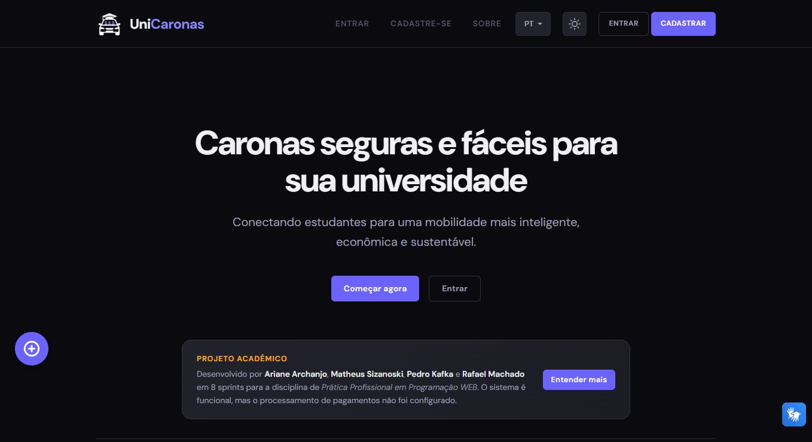

UniCaronas
Plataforma de caronas universitárias com autenticação institucional via JWT, chat em tempo real e sugestão de preço por trajeto.
Node.jsExpressPostgreSQLJWTJavaScript
Uma seleção de iniciativas pessoais, acadêmicas e freelance, desenvolvidas em diferentes contextos, tecnologias e desafios.